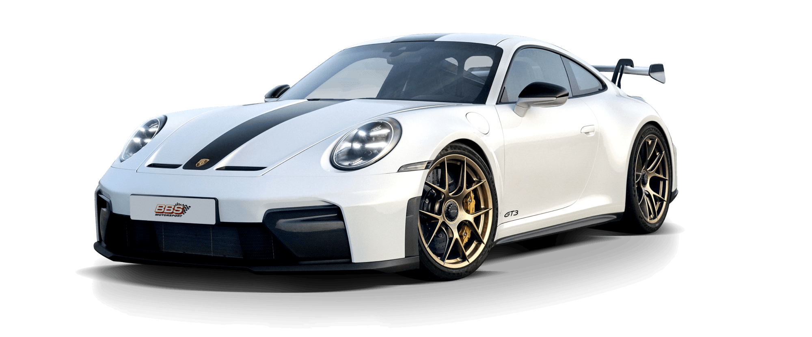
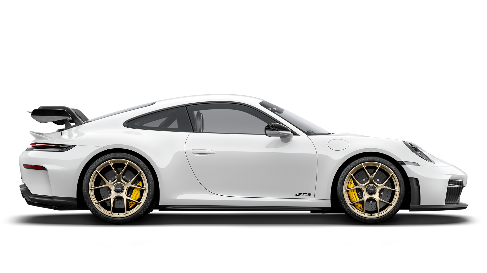
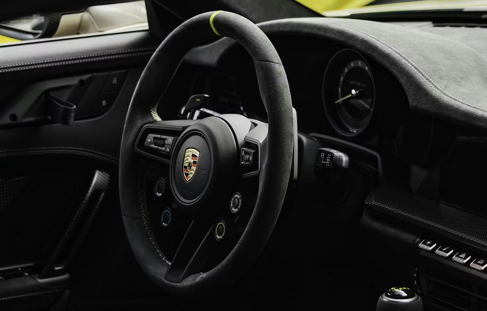
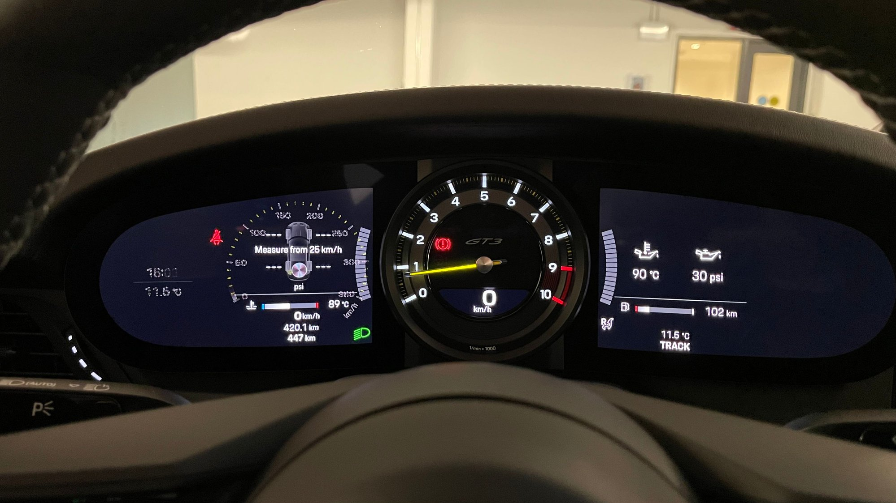
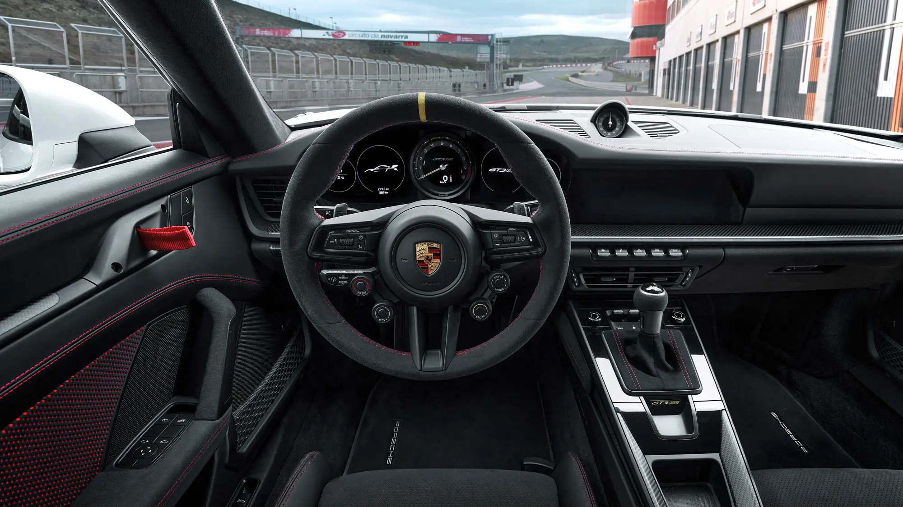

01
Fotele kubełkowe z CFRP
Skorupa z włókna węglowego oszczędza 11 kg masy i gwarantuje pełne trzymanie boczne na torze.
Stworzony na torze Nürburgring Nordschleife. Wolnossąca jednostka 4.0 Boxer, zawieszenie z podwójnymi wahaczami poprzecznymi i tylne skrzydło typu „łabędzia szyja”.

Przy 8 400 obr./min z natychmiastową reakcją na gaz.
Z funkcją Launch Control (3.9 s dla skrzyni manualnej).
Osiągana na 7. biegu bez straty docisku aerodynamicznego.
Legendarna, wolnossąca jednostka wysokoobrotowa.
Przytrzymaj przycisk startu i poczuj autentyczne brzmienie wolnossącej jednostki 4.0 Boxer.

Lekki sportowy układ ze stali nierdzewnej z dwiema centralnie umieszczonymi końcówkami w kolorze czarnym. Zoptymalizowany pod kątem redukcji masy o 10 kg i maksymalnego przepływu gazów spalinowych.
Poznaj aerodynamiczne linie wyścigowego nadwozia. Obracaj model, zmieniaj lakier oraz wykończenie kutych felg.
Kliknij pulsujące punkty na sylwetce 911 GT3, aby odkryć innowacje torowe generujące do 385 kg docisku.

Mocowanie skrzydła od góry eliminuje zakłócenia przepływu powietrza na kluczowej, dolnej powierzchni płata. Rozwiązanie przeniesione prosto z wyścigowego 911 RSR zapewnia maksymalną stabilność przy dohamowaniach z prędkości powyżej 260 km/h.
Skorupa z włókna węglowego oszczędza 11 kg masy i gwarantuje pełne trzymanie boczne na torze.

Średnica 360 mm, antypoślizgowe wykończenie i znacznik godziny 12.

Jednym przyciskiem ukrywa zbędne dane, zostawiając wyłącznie telemetrię torową.

Stalowa klatka bezpieczeństwa i krótki selektor przełożeń inspirowany skrzynią manualną.

Przełączniki trybów jazdy bezpośrednio na kierownicy, selektor PDK oraz zegar Sport Chrono w polu widzenia kierowcy.